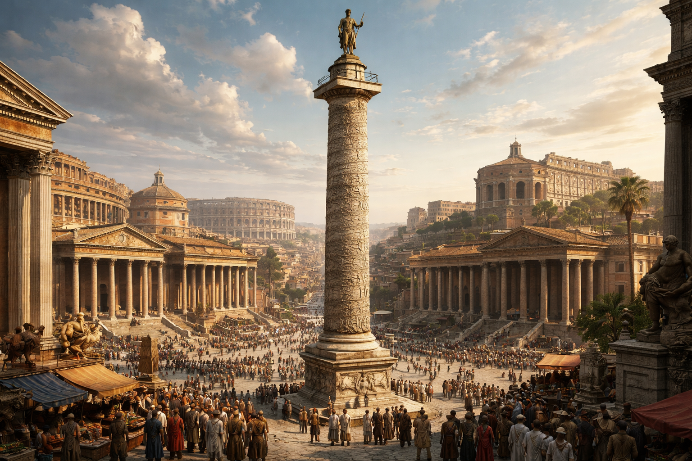

 Războaiele daco-romane au fost o serie de conflicte între Imperiul Roman și Dacia în timpul regelui Decebal, la începutul secolului al II-lea d.Hr. Ele s-au încheiat prin includerea Daciei în Imperiul Roman.
Cauza principală a războaielor a fost dorința Romei de a securiza frontiera dunăreană și de a controla resursele bogate ale regiunii carpatice. Dacia, condusă de Burebista și Decebal, era un stat puternic, capabil să amenințe provinciile romane.
Împăratul Traian a organizat două mari campanii militare — în anii 101–102 și 105–106 d.Hr. Romanii au construit poduri peste Dunăre și fortificații, folosindu-se de disciplina și tehnica armatei lor. Dacii se sprijineau pe terenul muntos și pe cetăți precum Sarmizegetusa.
Al doilea război s-a încheiat cu cucerirea capitalei și moartea lui Decebal. Sursele antice menționează faptul că regele ar fi ascuns o parte din comoară. Legenda aurului lui Decebal continuă și astăzi să inspire povești despre comori pierdute.
Victoria romană a fost celebrată prin Columna lui Traian de la Roma. Reliefurile sale în spirală prezintă, pas cu pas, scene din războaie, ca un film sculptat în piatră. Probabil ai văzut imaginea coloanei în manualul de istorie. Monumentul s-a păstrat foarte bine și poate fi văzut într-o scurtă vizită la Roma, aproape de forumul lui Traian și de Colosseum. Datorită acestei coloane, istoricii pot reconstitui mai clar desfășurarea conflictelor daco-romane.